This Christmas message is brought to you by the letter T, because, we hope you have a Terrific, Tasty, and Tremendous festive season, and, because we spent most of 2015 in Tasmania. We have already been lucky enough to receive several Christmas letters from friends and have enjoyed hearing news of Thrilling Travels and Tranquil Trips. Here is a Terse Tale about what Transpired in 2015 for the Two of us.
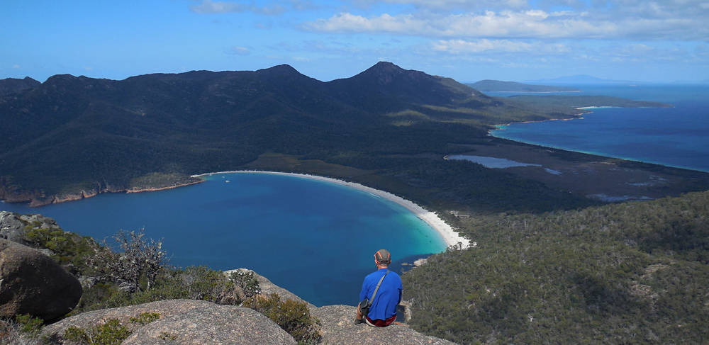
For a Tiny state - the smallest in Australia - Tasmania contains a whole lot of wildness (too many W's, too few T's in that sentence) and, during our eight month stay we managed to Taste a Tantalising portion of that wildness. Tassie is somewhat unique in Australia as it has large Tracts of roadless land and a huge Tract of the state is set aside in parks and reserves. The weather, however, can be a bit Tumultuous especially when you want to hike, climb and kayak.
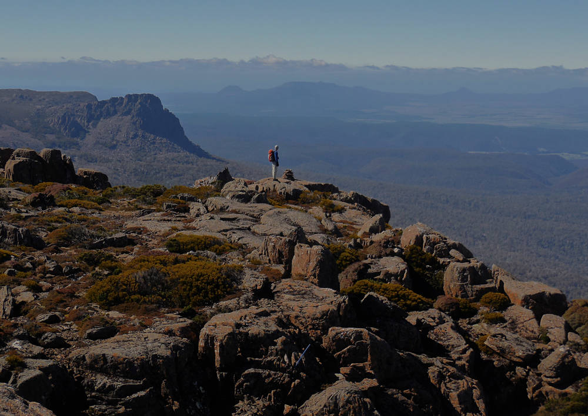
A Tick list of all the Tremendous Trips we did in Tassie would be Tedious, and Truthfully, we have forgotten half of them already, but, we do remember launching our kayaks from Strahan, against the fateful warnings of a volunteer SAR member whose evocative words - sure to make us Tremble - "you could be pinned down at a dry camp" still make us chuckle. In reality, we had a mellow week long trip around this large harbour, swimming every evening, watching the sun set over the West Coast Range, eating ripe blackberries from small islands, reliving the excitement of Australia's largest and most successful environmental campaign (blocking the proposed Franklin below Gordon dam) and exploring the rich convict history of the area.
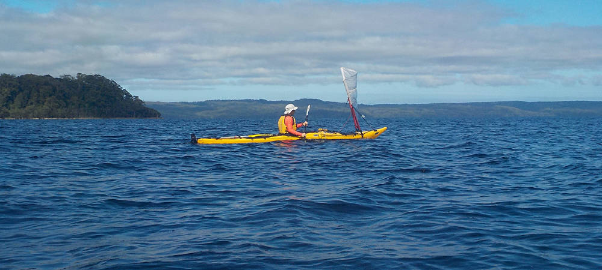
It was fun, a few days later, to Trek in to Frenchmans Cap and Travel to the top of this peak, visible from Macquarie Harbour. In the 1980's, when Sandy lived in Tassie, the Trek in involved Traversing the famous "Sodden Loddon's" where the Loddon River floods the Loddon Plains and the mud was hip deep. In the last Ten years, with a mix of private and government funding, the Sodden Loddons are no more as the Track now takes boardwalk for Two to Three kilometres. The Trek to the summit is still a long day with lots of elevation gain and loss along a Twisted Track but the scenery is Tremendous.
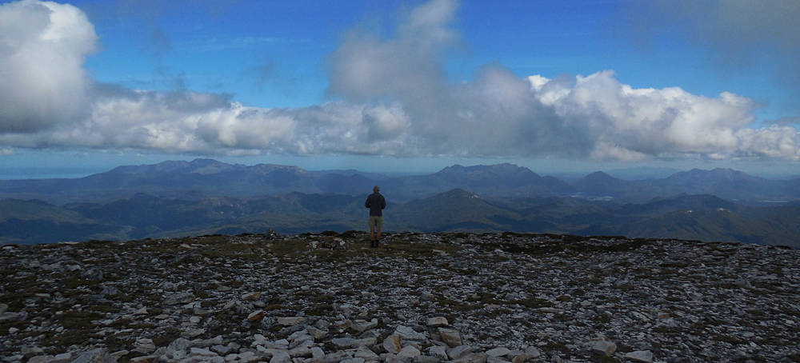
There is still mud to be had aplenty in Tassie, however, as we discovered when we Trekked the Mount Anne Circuit over Three days. This is a Tremendous Trip although it does involve a long mud wallow on the last day. The Trip Traverses Two peaks - Mount Eliza and Mount Anne, then Travels a Tightrope along Lightening Ridge to drop down to the Lonely Tarns. The scramble up Mount Anne is Tough - with some exposure and fourth class climbing - it's particularly Thrilling when wet.
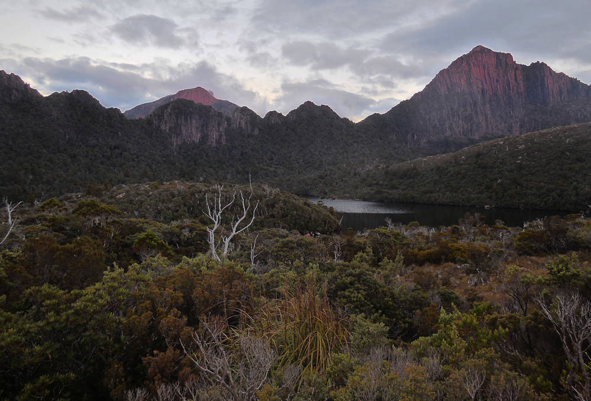
We did many other mountain Treks in Tassie, taking the Arm River Track into Pelion Plains to climb Tassie's highest peak, Mount Ossa, as well as Mounts Oakleigh and Pelion West all in Cradle Mountain - Lake St Clair National Park. Of course, we Travelled to the Top of Cradle Mountain, Tagged The Acropolis, and wandered through The Labyrinth after paddling our kayaks up Lake St Clair and Trekking into Pine Valley.
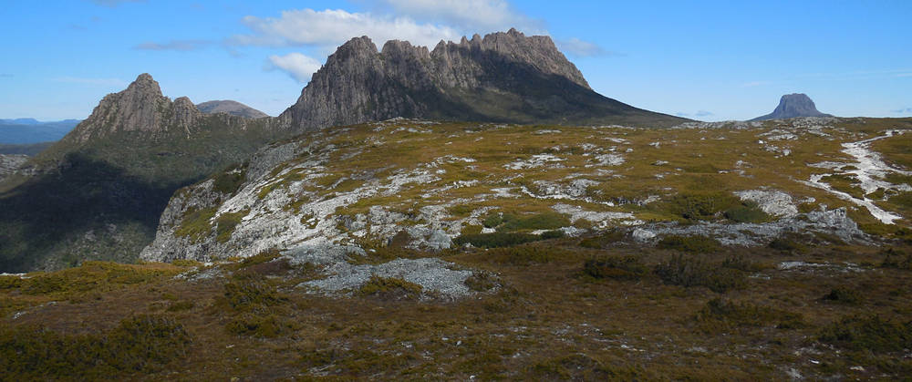
One of our best Trekking Trips was Traversing the Walls of Jerusalem National Park with Jason Beechcroft who paddled his sea kayak around Australia, including Tasmania (not usually done) and crossing the Tasman Strait Twice, all solo. The scenery and Trekking was breathtakingly beautiful, but it was also a big Thrill to meet such an accomplished adventurer.
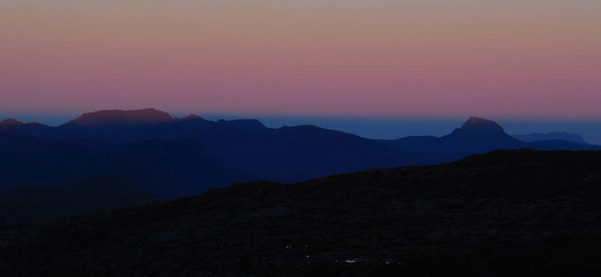
Our own sea kayak trips in Tassie were less ambitious, but every bit as Terrific. In addition to paddling a big chunk of the north coast as separate day trips, we did a four day Trip around the Freycinet Peninsula camping at the gorgeous Wine Glass Bay and deserted Schouten Island. We had white sand beaches, granite cliffs, wave-swept rocky islets, and clear Turquoise water all to ourselves.
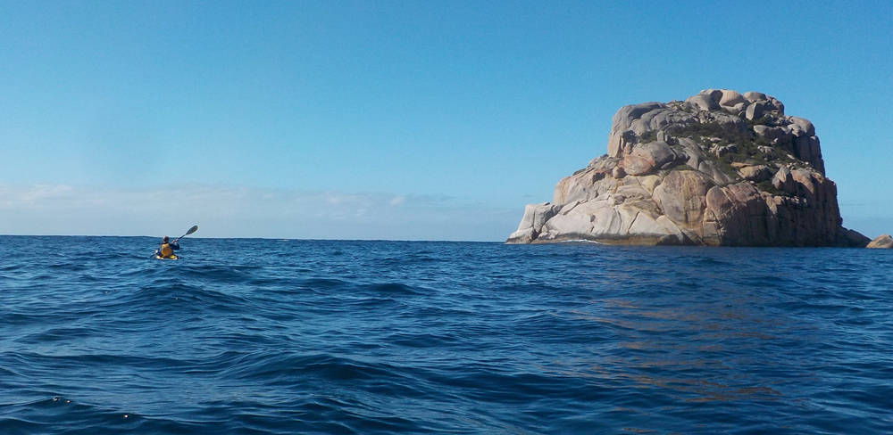
There was Thrilling paddling around the Tasman Peninsula which has the highest sea cliffs in the southern hemisphere. On calm days, you can paddle into sea caves, under waterfalls, through arches, and around rocky islets awash with giant kelp forests. We saw huge pods of dolphins, humpback whales breaching, seals fishing and sleeping, even Tiny Penguins.
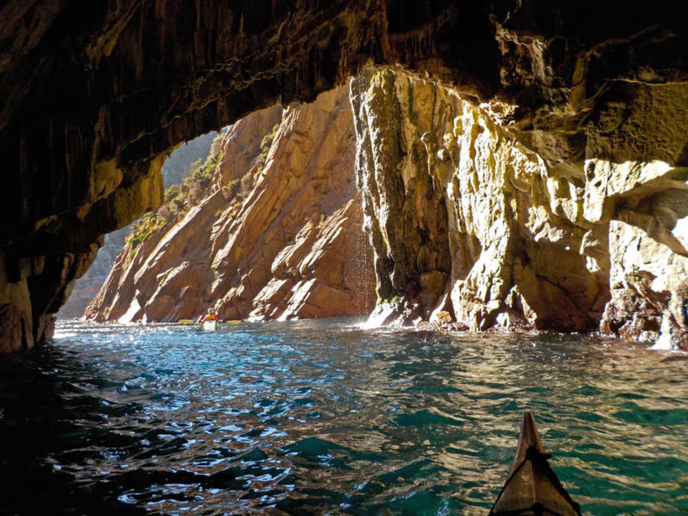
The best sea kayak trip we did was around Maria Island, a National Park where no vehicles are allowed. We had calm weather to circumnavigate the entire island over four days. The island is a sanctuary for wildlife and in addition to the Terrific sea kayaking, there are Tremendous walking Tracks. Landing on Soldiers Beach after crossing Mercury Passage from the mainland we counted 30 wombats calmly grazing on the meadow above the beach. There are Cape Barron Geese, possums, Tasmanian Devils, and pademelons (a type of small wallaby).
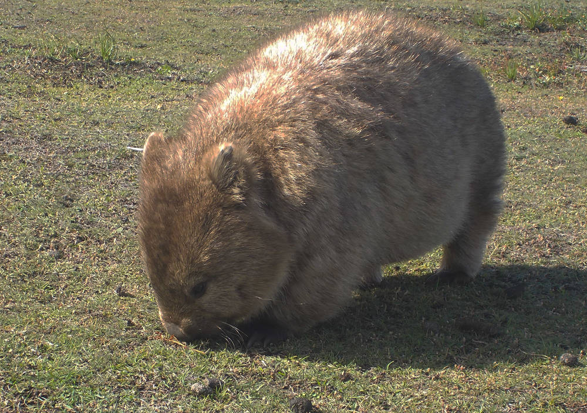
But, we did leave Tassie, and went in the spring to Natimuk to spend a month climbing at Mount Arapiles. As usual, the climbing was Tremendous, Terrifying at Times, but we Ticked off a number of classics we had been wanting to climb since last year. It was, however, hotter than normal for that time of year, and the flies were Tremendous in number.
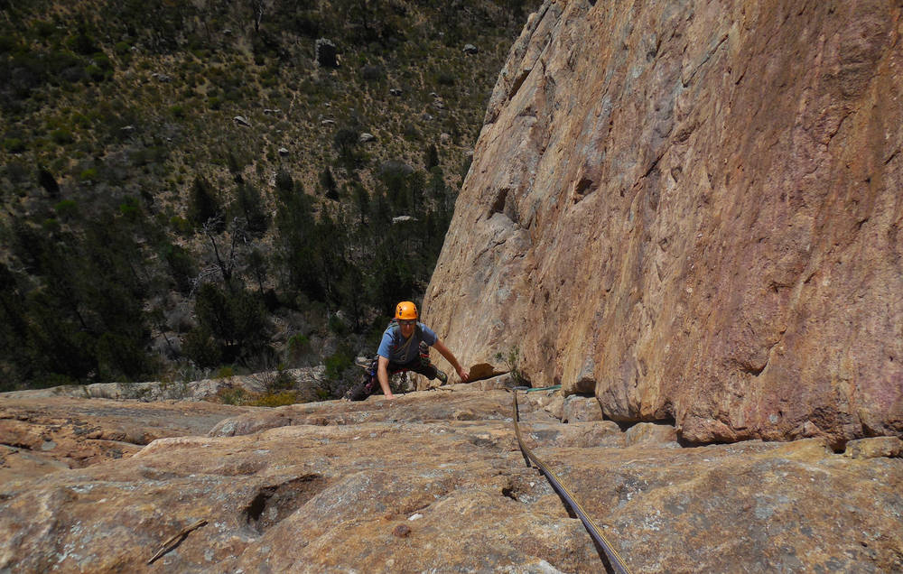
When it got too hot we left Mount Arapiles, spent five days walking the Great Ocean Walk along the Southern Ocean in Victoria and through the Otway Range, took the sea kayaks to Corner Inlet and Tickled a little bit of the fabulous paddling on Wilsons Promontory, and finally finished with an iconic seven day paddle down the Murray River which was notable for the deafening sounds of the Australian bush at night. A night in the Australian bush is like nothing we have ever experienced in Canada. The noise starts early, around 5.00 pm as Sulfur Crested Cockatoos begin screeching raucously. As dusk approaches, male Koalas begin grunting, a sound both loud and indescribable, something a bit like a chainsaw revving up, kangaroos thump out of the bush and they too begin grunting and groaning at each other. As darkness falls, a hundred other creatures of the night, possums and bandicoots begin to scuffle in the undergrowth and Boobook owls call all night long. It is a fantastic cacophony of life that renews our faith in the redemptive power of nature.
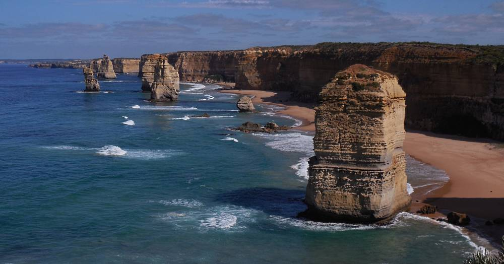
And, that was our year from the letter T for Transformative. We wish you all the best of health and joy in the year ahead, and leave you with a quote from the Indigineous people of Australia: "Those who lose dreaming are lost." May you all enjoy a year of Tremendous dreams and Thrilling Times in 2016.
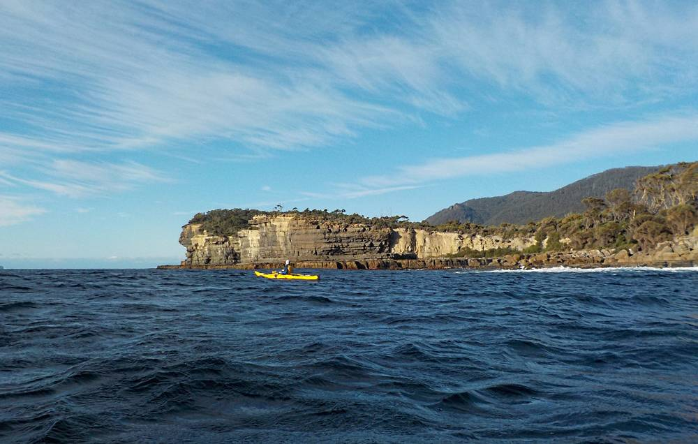
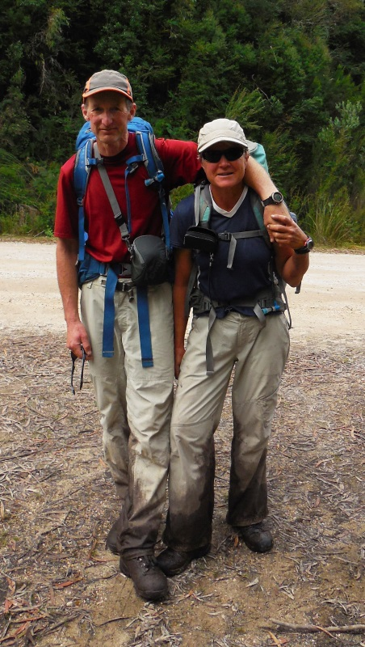
Doug & Sandy.